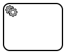
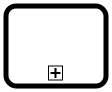

BPMN Basics
Definition von BPMN
Die Verwendung der Business Process Model and Notation (BPMN) erlaubt die Modellierung von Geschäftsprozessen.
BPMN ist ein Standard, der grafische Symbole und deren Verwendung spezifiziert. Immer wenn von BPMN die Rede ist, ist immer der Standard BPMN 2.0 gemeint.
Überblick über die Verwendung von BPMN
Man unterscheidet zwischen zwei Arten von Prozessmodellen, die beide mit BPMN modelliert werden können:
Strategische Prozessmodelle:
- Sie beschreiben einen Ablauf so kompakt wie möglich.
- Man erhält schnell einen Überblick über den gesamten Prozess.
- Die Sprache ist abstrakt, logisch und dient dem schnellen Verständnis des ganzen Prozesses.
- Diese Prozesse sind nicht automatisierbar.
Operative Prozessmodelle:
- Sie beschreiben einen Ablauf so konkret wie möglich.
- Es ist genau definiert, was wann wie geschehen muss.
- Die Semantik ist physisch, konkret und dient der tatsächlichen Ausführung des Prozesses.
- Diese Prozesse sind in Teilen oder als Ganzes automatisierbar.
In unserer Vision einer prozessgetriebenen Entwicklung beginnt man mit einem strategischem Modell, entwickelt sich schnell zu einem operativem Modell, welches iterativ verbessert wird. Ziel ist es, stets alle Beteiligten an der Iteration mitwirken zu lassen.
Der Vorteil diese Vorgehens ist:
Man hat ein Werkzeug in der Hand, frühzeitig Fehler zu identifizieren und kann korrigierend eingreifen, bevor hohe Kosten entstehen.
Zusammenfassung Arten von Prozessmodellen
| Strategische Prozessmodelle | Operative Prozessmodelle |
|---|---|
| kompakte Ablaufbeschreibung | konkrete Ablaufbeschreibung |
| schneller Überblick | genaue Definition (was, wann, wie) |
| abstrakte, logische Sprache | physisch-konkrete Semantik |
| nicht automatisierbar | automatisierbar (in Teilen oder als Ganzes) |
Begriffsdefinition
Wir halten es für wichtig, folgenden Begriff zu erklären.
Kollaboration
Kollaboration bezeichnet die Zusammenarbeit mehrerer unabhängiger Prozesse. Die Zusammenarbeit wird über den Austausch von Nachrichten zwischen den Prozessen realisiert.
Das Diagramm, das diese Prozesse und ihre Nachrichten darstellt, heißt Kollaborationsdiagramm.
Grundlegende BPMN-Elemente
Hier werden die wichtigsten BPMN-Elemente beschrieben:
- Aktivität (Grün)
- Sequenzfluss (Orange)
- Gateway (Blau)
- Ereignis (Lila)
- Pools und Lanes (hier nicht dargestellt)

Aktivität
Eine Aktivität symbolisiert, dass etwas getan werden soll.

Spezialformen der Aktivität
| Name | Symbol | Beschreibung |
|---|---|---|
| Benutzeraktivität |  |
Stellt eine Aktivität dar, die eine Benutzerinteraktion erfordert. |
| Serviceaktivität |  | Stellt eine Aktivität dar, die einen Dienst wie einen Webdienst oder eine automatisierte Anwendung verwendet. |
| Skriptaktivität |  |
Stellt eine Aktivität dar, die ein Skript beinhaltet, welches von einer ProcessEngine ausgeführt werden soll. |
| Aufrufaktivität |  | Stellt eine Aktivität dar, die einen anderen Prozess aufruft. Sobald der aufgerufene Prozess beendet ist, ist auch die Aufrufaktivität beendet. |
Sequenzfluss
Ein Sequenzfluss wird verwendet, um die Ablauf-Reihenfolge der Prozesselemente darzustellen.
Gateway
Ein Gateway teilt den Prozessfluss in mehrere Flüsse auf, oder führt mehrere Flüsse wieder zusammen.
Spezialformen des Gateways
| Name | Symbol | Beschreibung |
|---|---|---|
| Exklusives Gateway |
 |
|
| Paralleles Gatway |
 |
|
Ereignis
Ein Ereignis symbolisiert, dass etwas passiert. Ereignisse können:
Ein eigenes Element im Diagramm sein.
An eine Aktivität gebunden sein.

Spezialformen des Ereignisses
Die Art des Ereignisses wird in dessen Symbol durch vier Charakteristika dargestellt:
- Art der Linie des Kreises
- Durchgezogene oder gestrichelte Linie
- Ausgefülltes oder nicht ausgefülltes Symbol
- Gewähltes Symbol
Im Folgenden findet sich eine nicht vollständige Liste aller Kombinationen dieser Charakteristika.
1. Art der Linie des Kreises
| Name | Symbol | Beschreibung |
|---|---|---|
| Startereignis | Eine einzelne, dünne Linie bedeutet: Das Ereignis startet den Prozess. | |
| Zwischenereignis |  |
Doppelte, dünne Linien bedeuten: Das Ereignis tritt während des Prozessablaufs auf. |
| Endereignis |  |
Eine einzelne, dicke Linie bedeutet: Das Ereignis beendet den Prozess. |
2. Durchgezogene oder gestrichelte Linie
| Name | Symbol | Beschreibung |
|---|---|---|
| Unterbrechendes Ereignis |
Durchgezogene Linien bedeuten: je nach Kontext wird bei Eintritt
|
|
| Nicht unter- brechendes Ereignis |
 |
Gestrichelte Linien bedeuten: je nach Kontext wird bei Eintritt
|
3. Ausgefülltes oder nicht ausgefülltes Symbol
| Name | Symbol | Beschreibung |
|---|---|---|
| Eintretendes Ereignisse | Ein nicht ausgefülltes Symbol bedeutet: Der Prozess läuft erst weiter, wenn das Ereignis eintritt. |
|
| Auslösendes Ereignis |  |
Ein Ausgefülltes Symbol bedeutet: Das Ereignis wird ausgelöst und der Prozess läuft weiter. |
4. Gewähltes Symbol
| Name | Symbol | Beschreibung |
|---|---|---|
| Nachricht |  |
Empfang und Versand von Nachrichten. |
| Zeit |  |
Periodisch zeitliche Ereignisse, Zeitpunkte oder Zeitspannen. |
| Signal |  |
Sendet oder reagiert auf ein Signal. |
| Bedingung | |
Reagiert auf veränderte Bedingungen im Bezug auf Geschäftsregeln. |
| Fehler | Auslösen oder Behandeln von Fehlern. |
Pools und Lanes
Ein Pool ist ein Symbol zur Darstellung der Grenzen eines Geschäftsprozesses. Ein Geschäftsprozess muss in sich abgeschlossen sein; er kann sich nicht über mehrere Pools erstrecken. Mehrere Prozesse können über Nachrichten miteinander kollaborieren.
Ein Pool kann in Lanes unterteilt sein. Eine Lane beschreibt, wer für die Erledigung von Aktivitäten zuständig ist. Eine Lane kann z.B. eine Benutzerrolle oder ein System repräsentieren.
Eigenschaften des Pools
Falls der Inhalt eines Pools nicht bekannt ist, für die Kollaboration nicht von Bedeutung ist oder die Übersichtlichkeit erhöht wird, kann er zugeklappt werden. Ist ein Pool zugeklappt, spricht man von einem Black-Box-Pool. Ein Black-Box-Pool wird als Rechteck mit Beschriftung dargestellt, hat aber keinen weiteren Inhalt.
Die ProcessEngine hat zurzeit noch folgende Einschränkungen:
Weitere BPMN-Elemente
BPMN definiert neben den Basiselementen weitere Elemente. Hier nicht beschriebene BPMN-Elemente werden von der ProcessEngine noch nicht unterstützt.
Die Anmerkung ist zurzeit das einzige Element in dieser Kategorie.
Anmerkung
Eine Anmerkung ist ein Kommentar im BPMN-Diagramm. Sie wird von der Process Engine nicht beachtet.